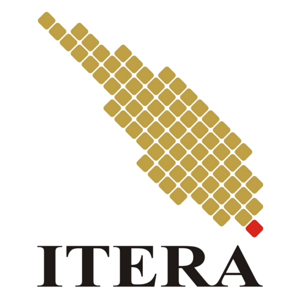

|

Welcome to Institut Teknologi Sumatera
| Nama |
Institut Teknologi Sumatera |
| Status |
Perguruan Tinggi Negeri |
| Jumlah Mahasiswa |
22.261 |
| Jumlah Prodi |
36 |
| Jumlah Fakultas |
3 |
Bersama Sumatera Membangun Generasi Unggul
About
- Program studi: Teknik Informatika.
- Fakultas: Fakultas Teknologi Industri.
- Universitas: Institut Teknologi Sumatera.
- Visi: Menjadi program studi yang unggul dalam bidang teknologi informasi dan komunikasi pada tingkat nasional dan internasional pada tahun 2030.
- Misi:
- Menyelenggarakan pendidikan tinggi di bidang teknologi informasi dan komunikasi yang berkualitas dan berdaya saing tinggi.
- Mengembangkan penelitian di bidang teknologi informasi dan komunikasi yang inovatif dan bermanfaat bagi masyarakat.
- Menyelenggarakan pengabdian kepada masyarakat di bidang teknologi informasi dan komunikasi yang relevan dengan kebutuhan masyarakat.
- Membangun kerja sama dengan berbagai pihak, baik di dalam maupun di luar negeri, untuk mendukung pengembangan program studi.
Our Services
- Pendidikan
- Penelitian
- Pengabdian kepada Masyarakat
- Ke Sama
Contact Us
Email: pusat@itera.ac.id
Phone: +62 811 721 2160
Address: Jl. Terusan Ryacudu, Way Hui, Jati Agung, Kabrjaupaten Lampung Selatan, Lampung 35365, Indonesia
Media Sosial
Ikuti kami untuk informasi terbaru di:
Facebook |
Instagram |
YouTube
|
|